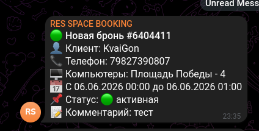
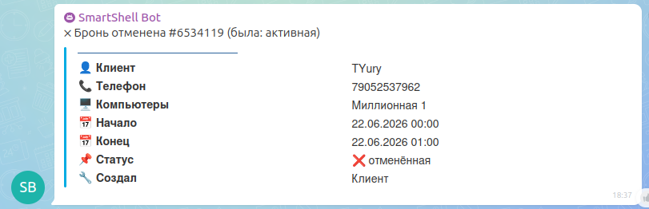
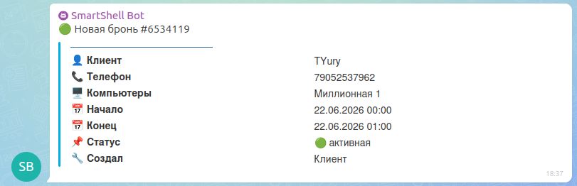

Фоновый сервис, который следит за бронированиями в биллинге SmartShell и уведомляет команду в Telegram (и опционально в Bitrix24) о новых бронях и отменах — без ручного мониторинга админки. Компактный по объёму, но с тремя интеграциями и логикой, устойчивой к дублям и протухшему токену.
Брони в клуб приходят через биллинг SmartShell. Раньше, чтобы узнать о новой брони, администратору надо было держать открытой админку и обновлять её вручную. Отмену заметить ещё сложнее — слот освобождался, но об этом никто не узнавал вовремя.
Сервис снимает эту работу с человека: он сам опрашивает биллинг, видит новые брони и отмены и отправляет их туда, где команда и так сидит — в Telegram. Если в клубе используется Bitrix24, тот же поток событий уходит и туда.
Ручные брони администратора при этом отфильтрованы — уведомления приходят только по клиентским, чтобы не создавать лишнего шума.
774 строки — немного по объёму, но за ними устойчивая работа с внешним API, авторизацией и состоянием без единого дубля и без ручного вмешательства неделями.
SmartShell отдаёт брони через GraphQL постранично. Нужно обходить страницы, собирать полный список и делать это регулярно, не пропуская записи, появившиеся между опросами.
Доступ к API требует авторизации, а токен живёт ограниченное время. Если он протухнет посреди ночи — сервис молча перестаёт получать данные, и об этом никто не узнает до утра.
Новую бронь заметить легко. Сложнее — поймать смену статуса: бронь была, стала отменённой. Для этого сервис должен помнить предыдущее состояние между запусками.
При частом опросе легко отправить одну и ту же бронь дважды. Спам уведомлениями — быстрый способ добиться того, чтобы команда перестала их читать вовсе.
Сервис без интерфейса — его «лицо» это сообщения. Ниже плейсхолдеры под реальные скрины; имя файла подписано на каждом.
assets/booking/01-tg-new.png

assets/booking/02-tg-cancel.png

assets/booking/03-bitrix.png

Положи PNG в assets/booking/ с именами из плейсхолдеров. Вертикальный формат — под скрины телефона. Страница подхватит их сама.
Компактный сервис по низу рынка — но с тремя реальными интеграциями и продакшен-логикой, а не учебный скрипт.
| Ставка | 3 дня (24 ч) | 5 дней (40 ч) |
|---|---|---|
| $8/ч · 650 ₽ | ~15 тыс. ₽ | ~26 тыс. ₽ |
| $10/ч · 800 ₽ | ~19 тыс. ₽ | ~32 тыс. ₽ |
| $12/ч · 950 ₽ | ~23 тыс. ₽ | ~38 тыс. ₽ |
[ Ориентир ] Реалистичная оценка по низу рынка — $250–400 (20–32 тыс. ₽).